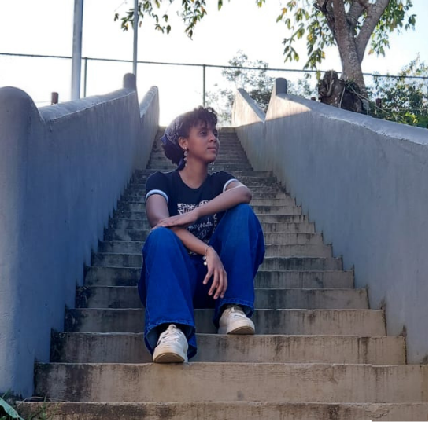
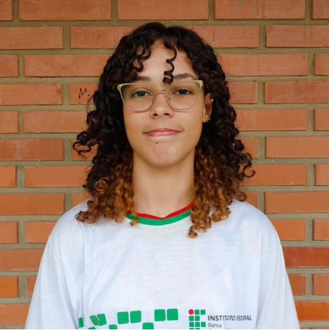

DESENVOLVIMENTO DE UMA FERRAMENTA GAMIFICADA PARA O ENSINO DE LÓGICA DE PROGRAMAÇÃO PARA O PRIMEIRO ANO DO IFBA CAMPUS VALENÇA
Resumo
As ferramentas gamificadas utilizam elementos de jogos em contextos educacionais, promovendo engajamento e motivação. Diante das dificuldades comuns no aprendizado inicial de programação, este projeto desenvolveu um recurso digital interativo com estratégias gamificadas para tornar o estudo mais eficaz. A metodologia envolveu uma pesquisa bibliográfica e outra de campo para identificar os principais desafios enfrentados pelos alunos do primeiro ano do IFBA Campus Valença.
Com base nesses dados foi criada uma ferramenta com desafios, recompensas e feedbacks alinhados aos objetivos pedagógicos. Os testes realizados apontaram aumento do interesse e melhor compreensão dos conteúdos de lógica de programação, especialmente entre estudantes sem experiência prévia.
Espera-se que a aplicação da ferramenta gamificada possa apoiar o ensino, tornando a aprendizagem mais atrativa e adequada ao perfil dos alunos, e contribuindo para reduzir dificuldades iniciais e estimular a permanência no curso.
Quem somos?

Ana Clara França
Estudante do IFBA campus Valença no terceiro ano do curso de informática, desenvolvedora Python, GDscript e WEB

Carla Magalhães
Estudante do IFBA campus Valença no terceiro ano do curso de informática, desenvolvedora Python e WEB